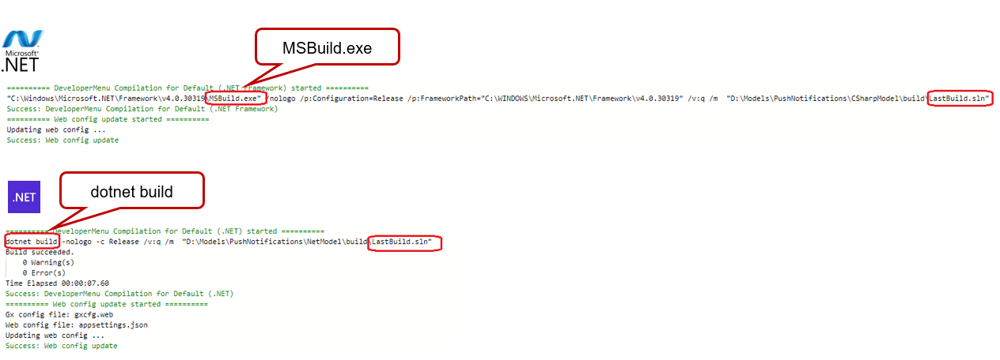
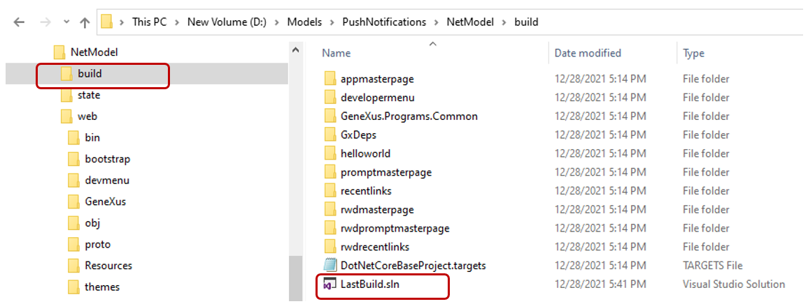
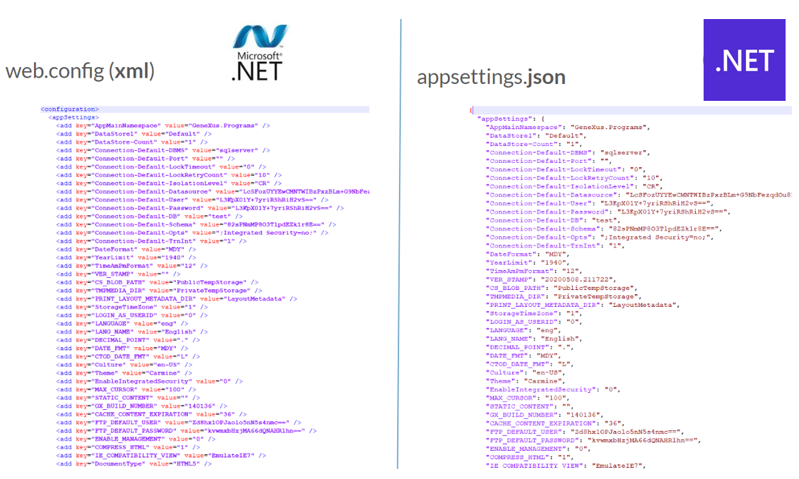
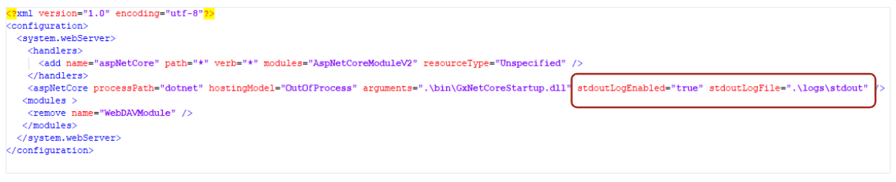

The GeneXus .NET Generator is very similar to the .NET generator because they share most of the code.
Both generate C# code and share the same repository of GeneXus Standard Classes.
Some differences between the .NET Core generator and the .NET generator are only because the .NET Core generator is still in the development stage, while other differences are due to differences between platforms.
Also, the .NET Core generator is similar in several aspects to the Java generator because the generated code runs on Linux.
A Visual Studio solution called LastBuild.sln is always generated in every operation, containing the list of objects generated in the last build operation. That solution can be used to rebuild assemblies outside GeneXus IDE and also to debug the generated code.

The generated code remains in the build directory (parallel to the web directory):

The code generated by the .NET Core generator is practically the same as the generated by the .NET generator, with the exception that the .NET Core generator creates fewer sources.
For REST services, sources with suffix _services.cs (*_services.cs) are not generated (but *.svc are still generated).
Also, *.rsp bld * .cs are not generated in any case.
When generating in .NET, the web.config file contains the environment properties settings. The equivalent in .NET Core is called appsettings.json. The format is JSON (property-value list) and it is generated with a structure that is very similar to the web.config file.

The appsettings.json file has less information than the web.config file because the sections that are specific to ASPNET aren't in the appsettings.json file but they are directly programmed into the GeneXus Standard Classes code.
The .NET Core generator only creates a small web.config file when configuring the Web Server property = Internet Information Server.
It is very small and contains the settings to connect the IIS with the Kestrel web server.
dotnet.exe aproceduremain.dll
- At runtime, when running the application in a browser and comparing an application generated with .NET and another generated with .NET Core you will see only a few differences.
- The URL is the same.
- Performance & multithreading: .NET Core supports concurrency in requests in the same session by default, while.NET queues them, unless you change the configuration (.NET framework 4.7 supports that). The behavior of .NET Core is similar to Java in this aspect. (ref. https://stackoverflow.com/questions/44527292/enabling-concurrent-requests-from-same-session-in-asp-net-core)
The MySQL driver for .NET Core does not support multiple data readers. This implies the following:
If you have nested loops on tables of the database (eg, nested For Each commands or a for each command with a nested new), and the recordset that is returned by the outer for each has a high cardinality, memory consumption can be very high.
When the Web Server property is set to Kestrel HTTP Server, while the server is running there is an opened console where the information about the runtime execution is displayed as well as unmanaged exceptions and errors.
When the Web Server property is set to Internet Information Server, there is a trace containing the internal Kestrel server output that can be activated through the web.config (by setting the "sdtoutLogEnabled" as shown):
